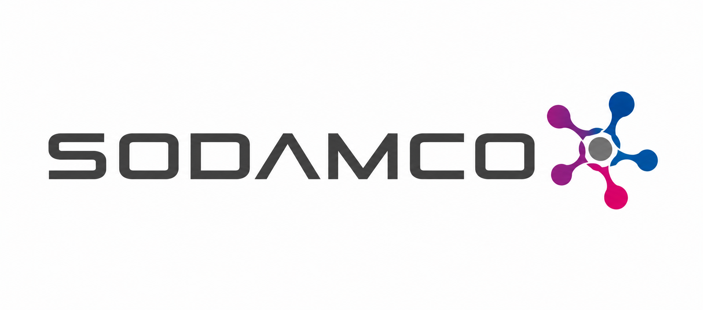
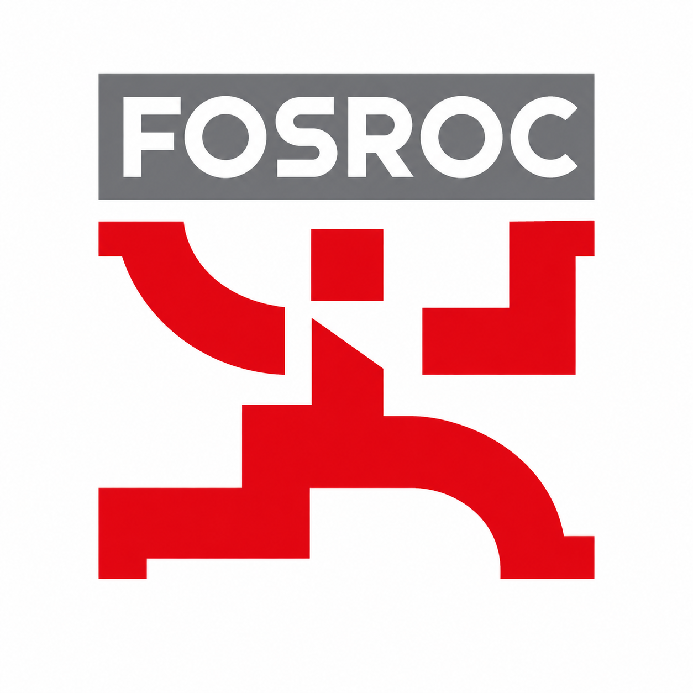
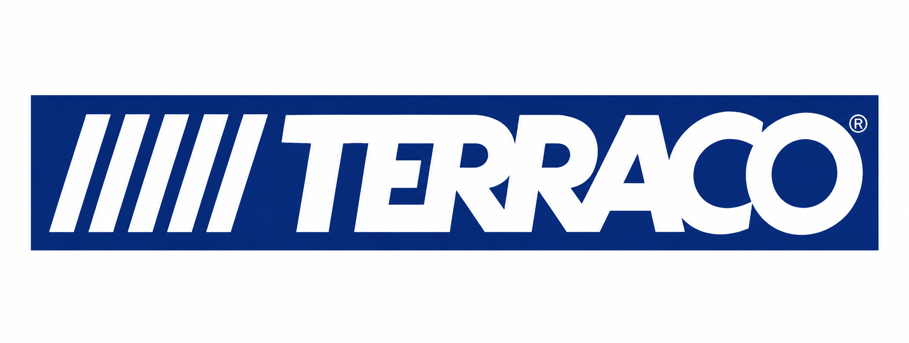

Tile Glue & Grout Suppliers in UAE
The best tile glue and tile grouts to buy for your next project. Tile grouts are essentially used to keep the adjoining tiles in place on the wall or the floor. Traditionally, the tiles used to be placed with a coat of white cement to keep them grounded. However, the white cement tends to break easily due to absorbing the water seepage and the bacterial growth that makes it ineffective. This further leads to stained tiles.
So, as tile suppliers in Dubai, SAQ Building Materials offers a selective range of tile grout and tile glue to overcome these challenges. But before placing the tiles in perfect symmetry, you need to know what options are available in the market. And considering you have only one chance to do this right, you might as well choose from the best range of tile grout.
So, while deciding which tile glue or tile grout is best suited for your need, you must check out the two most common types of grout:
- Cement-Based Grout: This is one of the most commonly available and easy-to-use varieties in the market. These are highly useful for small tile joints where it acts as a tile to tile adhesive.
- Epoxy Grout: These tile grouts are more expensive than cement-based, require more labor, and are mainly used in commercial projects. These grouts are a two-part mixture, which includes solid and color additives.
Top 8 Tile Glues

Sodamco
High quality ready-mix tile adhesives.
Laying tiles for enhanced finishing of the floors and walls, the tile adhesive is specially formulated from OPC. Sodamco tile adhesive is a ready-mix, created by the selection of fine sand and additives to enhance its essential properties.

Weber
Offers one of the best tile glues in the market.
The Weber tile adhesive is easy to use as the tiles can be directly laid on top of the adhesive layer right after being unboxed, saving time on construction sites.

Fosroc
A top choice for tile adhesive.
Fosroc is one of the leading names in the construction industry for tile joint adhesive. Their tile adhesives are well suited to bond concrete structural builts and are suitable for a whole range of applications. As a well-established tile glue and grout supplier, we provide selected, high-quality material from their entire range.

Dr. Fixit
Tile adhesive that is one of a kind.
Dr.Fixit is one of the well-known tile adhesive brands of Indian origin. Their products are highly efficient in preventing water leakages and seepage. The tile glue from Dr. Fixit helps to protect the roof from problems, such as dampness and flaking, keeping the foundation leak-free due to its innovative technology.

Henkel Polybit
Offers the best water-resistant tile adhesive.
Henkel polybit provides a varied range of standard and epoxy tile glues. Their water resistant tile glue is highly effective both for indoor and outdoor use. The standard tile glues are crack-resistant and provide colour stability, whereas the epoxy tile adhesive is solvent-free and chemical-resistant.

Laticrete
Tile glue with the best bond strength.
The brand provides one of the highly efficient thin-set adhesives. It is made of cement-based powder which when mixed with water forms a quick paste. Their tile glue has high bond strength that helps to fix the tiles in perfect symmetry with ease.

Mapei
Well known for its tile glues.
Mapei offers several products that fall under the category of tile glues. These products are useful in fixing and bonding various building materials together for high-quality construction finishing. We offer a specialized range of products from their lineup for professional construction work.

Terraco
Offers ready-mixed tile adhesives.
Terraco offers a full array of high-performance tile adhesives. It provides easy-to-use colored tile glues and other ready-mixed tile adhesives for both wide and narrow joints. Their products are easy to apply across tiles, both on the exterior and interior surfaces of buildings.
Top 4 Tile Grouts
Sodamco
Highly effective grouting solutions.
Sodamco provides specialized tile grouts designed to meet strict requirements for durability and finish, keeping your tiled surfaces perfectly intact over time.
Weber
Grout that is easy to use and highly effective.
The Weber joint grout is one of the best-selling products from their catalogue. These Weber grouts provide better bond strength and can be grouted within a day without waiting for moisture evaporation.
Mapei
Creates colored tile grouts for ceramic tiles.
Mapei offers a varied range of colored tile grouts for ceramic tiles and stone materials. These are a premix, non-shrink grout that helps to keep tiles in a particular symmetry. It is easy to apply and clean, available in a varied range along with various color palettes.
Henkel Polybit
Offers higher crack resistance tile grouts.
These tile grouts are highly resistant to cracks and are 100% color stable. Their epoxy grout is highly suitable for wet areas and excellent for a solvent-free solution. It is especially produced to cater to fight moisture, making this water resistant tile grout beneficial for corrosive environments.
Available Grout Colors
23 standard shades available — from classic whites to deep charcoals.